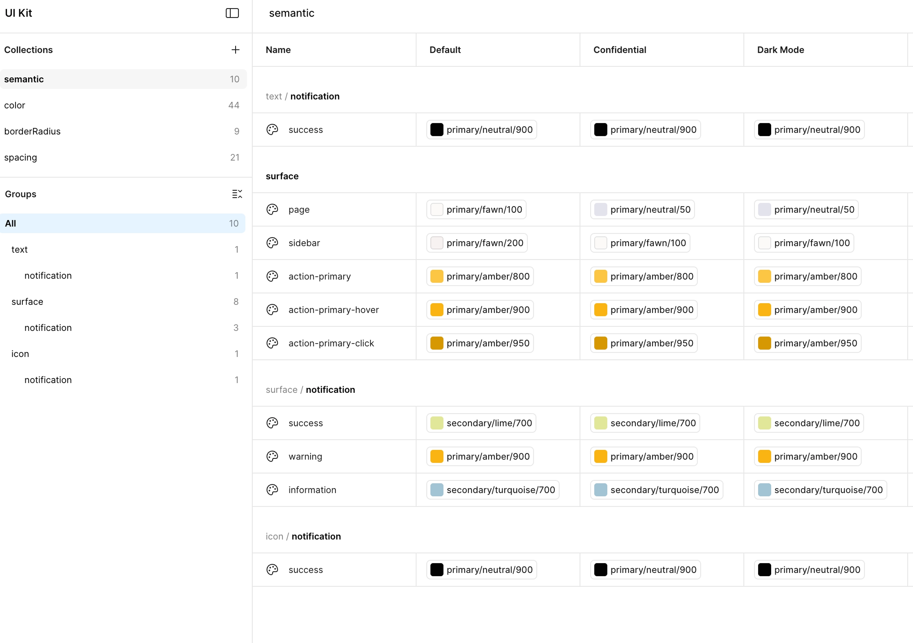
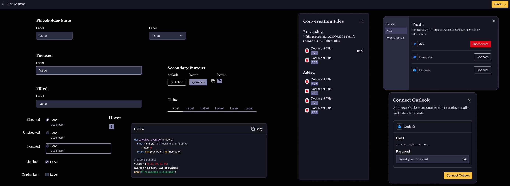
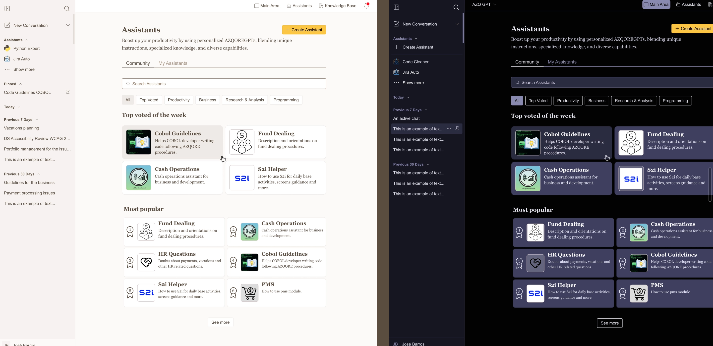
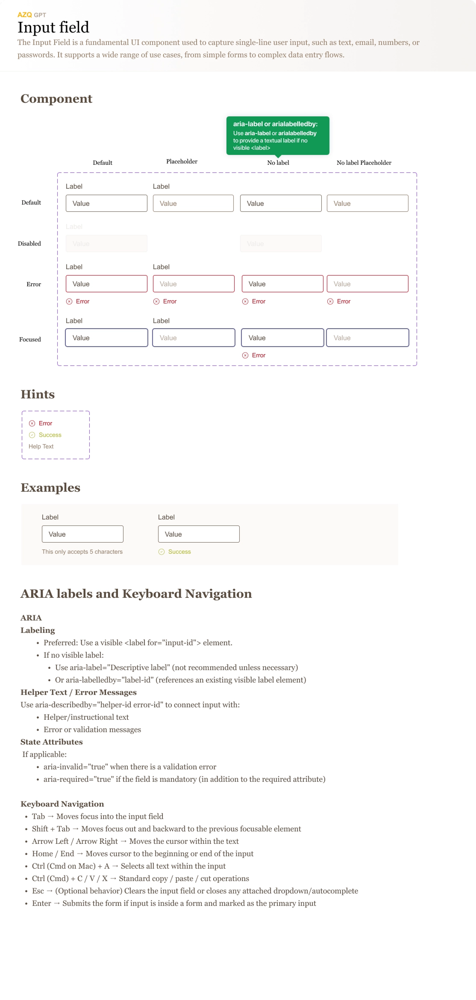

Challenge
An AI-based chat product for the web environment, focused on clarity, consistency and scalability.
The challenge was to create a simple interface for users while building a system robust enough to evolve — and grounded in what users actually needed, not assumptions about what they might want.

My Role
- Defining the UI Kit
- Creating semantic tokens
- Structuring for multiple contexts (default, confidential, dark)
- Designing the chat interface and states
- Contextual interviews with 5 users from different profiles and roles — informing the definition of team-shared assistants and integration priorities (Jira, Confluence, Outlook)
- Creating a RITE Testers channel (Teams) for recruiting real users for continuous testing and interviews
- Informal usability tests identifying problems in document management, privacy classification and global chat areas
Discovery &
Research
In-app feedback was practically non-existent: users had to leave the application, open Jira and log the issue manually. Contextual interviews with 5 users across different roles and responsibilities revealed distinct usage patterns and clear integration priorities — not assumptions.
Usability tests conducted informally via the RITE Testers channel identified friction in three areas: document management, privacy classification, and global chat navigation. These findings shaped the interface decisions that followed.
Design Decisions
The focus was on a semantic system, separating intent from presentation. This enabled scalability, cross-component consistency, and better alignment with development.
- Tokens organised by function: text, surfaces, actions, notifications
- Clear states for primary actions
- Reuse across modes and contexts
Chat interface principles:
-
Reduced cognitive load
-
Clear system feedback
-
Explicit interaction states
-
Non-intrusive integrated experience rating
An integrated contextual feedback area replaced the existing workflow of leaving the app to file issues in Jira. Adoption did not increase significantly, but it became a direct reporting channel without abandoning the application.

Outcome & Impact
- Consistent, clear interface
- System ready for growth without design debt
- Reusable UI Kit across modes and contexts
- Fewer ad-hoc decisions on new screens
- Priority integrations (Jira, Confluence, Outlook) defined from interviews, not assumptions
- Contextual feedback integrated in-app, eliminating the need to leave to report issues or suggestions


